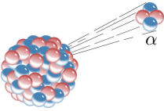
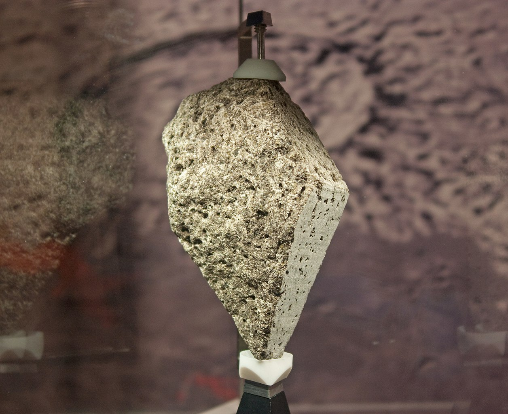

Measuring the ages of the Earth and Moon
A popular article exploring how the ages of the Earth and Moon were measured.
Introduction
Scientists present their evidence in the form of a measurement. People make many statements in everyday life. Some are qualitative and some are quantitative. In science, we try to deal only with statements that can be quantified. Otherwise, we would have no way to compare results. Scientists use measurements to arrive at precise and quantitative statements. Mathematics is the tool through which scientists study such topics like quantity. Regarded as the language of nature, mathematics has acted as the most essential weapon in almost every known field, including natural science, engineering, medicine, finance, and the social sciences.
Earth’s age: the quest begins
During any cloudless night, if you go away from the city in a place free from light pollution and if you look up towards the night sky, you will be mesmerized by a spectacular sight of thousands of stars dazzling in the sky. Naturally various questions will come to your mind like: Who created this Universe? How and why did it begin? What is the fate of the Universe? Who are we? How we came from? Are we alone in this Universe? Twinkling like diamonds, the beauty of the night sky has indeed captured the imagination of human minds since prehistoric times. Curious by nature, since our first awakening, Homo sapiens or humans have been asking these questions. This natural curiosity of humanity gave rise to science. If one looks at the long march of human understanding, one will find that science begins with the idea that we can understand our role in the universe using logic and observation. The stars and planets were mysterious objects for most of human history. Yet ancient Greek philosophers were able to use reasoned arguments and simple geometry to estimate the sizes and distances of our neighbors in space. Similarly, the most important scientific step in understanding Earth’s history was not one particular set of measurements, but rather the mental leap of realizing that Earth had a history that could be unraveled by scientific observations and measurements. This happened mostly in the 16th and 17th centuries with the Renaissance and then with a period of time called the Enlightenment. One example of how science works is humanity’s long, step-by-step search to find the age of the Earth. By studying the Earth and the Moon, scientists have been able to piece together their linked histories.
In the Middle Ages, scholars thought they could calculate Earth’s age by finding out how long humans had lived on Earth. They assumed that humanity had been around almost since Earth itself formed. Therefore, scholars analyzed ancient records, especially Biblical scriptures that listed the generations since Adam and Eve. They concluded that humanity, Earth, and the whole cosmos were only a few thousand years old. The most famous calculation was made by Irish Archbishop James Ussher in 1650. Ussher deduced that the cosmos formed on Sunday, October 23, in 4004 B.C., and that humanity was created on Friday, October 28 the same year. Even today, some people — especially fundamentalist religious groups — still believe that the Earth is only a few thousand years old, based on this method of reasoning.
James Ussher, the person who first deduced that Earth was formed in 4004 B.C. Image credit: Wikimedia commons.
Then, gradually evidence mounted during the 19th century that the Earth was far older than previously believed. Presently we know with reasonable confidence that our planet and its only satellite, the Moon, are a double system that formed around 460 crore (i.e. 4.6 billion) years ago. The Moon probably originated during a gigantic collision in the late stages of planetary formation, after the Earth’s iron core formed. But, which weapon helps us to probe the age of the Earth and Moon? How can we tell the age of so confidently? Here comes the role of mathematics. Yes, mathematics equipped with brilliant minds of scientists became the invincible tool which ultimately revealed the age of our planet and its neighbour. Without mentioning the detail history of how this feat was achieved, I shall now discuss the mathematical technique which we use to measure the ages of our Earth, any rock, fossil or even any old architechtural artifacts.
Radioactive decay process
The age of the Earth-Moon system and the chronology of the Earth’s history are measured using the technique of radioactive decay. This well-understood physical process also provides the energy that drives most of the Earth’s geological evolution. In the late 1800s, the crucial discovery of radioactivity made possible even more accurate estimates of the Earth’s age. The process is worth discussing in detail since it allows us to date not only Earth but also rock samples from other worlds, such as lunar rocks and meteorites. The discovery of radioactivity happened by accident. In 1896 French physicist Antoine Henri Becquerel left some photographic plates in a drawer with some uranium-bearing minerals. Later he opened the drawer and found the plates fogged. Being a good scientist, he did not dismiss the event but investigated further. He found that the uranium emitted “rays,” which, like X-rays (discovered the previous year), could pass through cardboard. The new “rays” turned out to be not electromagnetic radiation, like ultraviolet light or X-rays, but rather energetic particles emitted by unstable atoms.

Alpha decay is one example type of radioactive decay, in which an atomic nucleus emits an alpha particle, and thereby transforms (or 'decays') into an atom with a mass number 4 less and atomic number 2 less. Image credit: Wikimedia commons.
Here is how radioactivity works. A radioactive atom is an unstable atom that spontaneously changes (usually into a more stable form) by emitting one or more particles from its nucleus. The original atom thus becomes either a new element (change in the number of protons in the nucleus) or a new form of the same element, called an isotope (change in the number of neutrons in the nucleus). The original atom is called the parent isotope and the new atom is called the daughter isotope. The time required for half of the atoms of any original radioactive parent isotope to decay into daughter isotopes is called the half-life of the radioactive element. If a billion atoms of a parent isotope were present in a certain mineral specimen, a half billion would be left after one half-life, a quarter billion after the second half-life, and so on. Sometimes the result of the decay is another radioactive element, so the decay continues. But in every case, the final product of the decay (or chain of decays) is a stable element. For example, carbon-14 decays to nitrogen-14 with a half life of only 5,570 years. Likewise, uranium-238 decays (in a series of steps) to lead-206 with a half-life of 4.5 billion (1 billion = 100 crore) years. Radioactivity is a random process. This means that the exact time when an individual atom decays is impossible to determine. Yet the average time for half of a very large number of atoms to decay is well determined.
Radioactive Half-Life
Using the general principles of radioactive decay, scientists have developed a simple equation to calculate a rock’s age. Let us examine how a scientist might use these principles to develop such an equation. Our goal is to give the age of a rock sample in terms of the number of atoms that have decayed. Suppose a radioactive isotope has a half-life of 1 million (1 million = 10 lakhs) years. A certain number of these atoms are trapped in a crystal as molten lava cools to form a rock. After 1 million years, half of them would be left. After 2 million years, half of that amount would be left. This would be ½ × ½ = ¼ of the original number. How many would be left after 3 half-lives, or 3 million years? It would half that number again, or ½ × ½ × ½ = ⅛. From the progression of half-lives, it is easy to see how to convert from this specific description to a formula for the general case. Let’s define the fraction of the atoms that are left as F. Suppose that we wait N half-lives, and ask how many atoms would be left. Based on the paragraph above, we see that the answer would be:
F = N/2
To make the same equation even more useful if you have a calculator, we can take the logarithm of both sides (base 10 logarithm), which gives:
log F = N log (1/2) = -0.301 N
We can check this result. From the discussion above, we know that when N = 3 half-lives, the fraction of atoms left is 1/8. Substituting N = 3, we get log F = -0.903. A calculator confirms F = 0.125, or 1/8.
Suppose we want to determine the age of a rock crystal and its potassium atoms. A particular radioactive form of potassium decays with a half-life of 1.25 billion years (known to 3 significant digits), yielding a certain form of argon atoms. Suppose we measure the argon and potassium in the rock crystal, and we find that 58% of the radioactive potassium has already decayed into argon, while 42% of the original radioactive potassium atoms are left in the crystal. How old is the rock? Our measurement has told us that F is 0.42, and so our equation gives - 0.376 = -0.301 N. Thus, N = 1.25 half-lives. That would mean that the rock is 1.62 billion years old.
Ages of the Earth and Moon
Understanding the age of the Earth was more difficult than early scientists imagined. The answer couldn’t be found by counting generations of humans. The answer couldn’t be found by measuring sedimentary layers. It wasn’t until radioactive decay processes started to be understood in the 1890s that people could begin to get an accurate measure of the age of both the Earth and the Moon. How did scientists pin down the ages of the Earth and the Moon? Using radioactive dating of rocks, we can measure the time since the rock was last melted. When rocks form from molten material, parent (and forming daughter) isotopes get locked into a single location. Prior to the rock’s formation, the products of radioactive decays could escape (for instance in the mixing of liquid lava). Once the rock solidifies, decays happen in situ. By knowing the rate of decay processes, and measuring the ratio of parent and daughter isotopes, it’s possible to place constraints on the age of a rock.
Armed with the technique of radioactive dating, geologists set out to find the oldest rocks on Earth. These oldest rocks are very rare because, after billions of years, most have been destroyed by the Earth’s active geology. The oldest regions of unaltered crust are in Greenland, Western Australia, and South Africa, and they are about 3.9 to 4.0 billion years old. In one remarkable discovery from the Jack Hills region of Western Australia, a small zircon crystal was found with a radiometric age of 4.404 billion years. Think of it - a mineral smaller than the head of a nail that tells us about billions of years of history! We have to add to this age an uncertain number representing the time the Earth was molten and the surface was being heavily bombarded by Solar System debris. An upper bound to the age of the Earth comes from the most primitive meteorite materials, which are inclusions rich in calcium and aluminum. This measured age of the Solar System is 4.567 billion years. The best estimate for the total age of the Earth is 4.54 billion years with an uncertainty of only 1%.

Lunar Olivine Basalt 15555 sample collected from the Moon by the Apollo 15 mission. It was formed around 330 crore (or 3.3 billion years ago. It is on display in the National Museum of Natural History of USA. Image credit: Wikimedia commons.
{kind=link}
To verify this number, scientists also wanted to date lunar rocks to see if they were comparable in age to the Earth. Each Apollo mission brought back a precious cargo of lunar rocks, soil samples, and drill cores. Together with some smaller samples brought back by earlier, unmanned Soviet probes, scientists gathered several hundred kilograms of rocks from nine different lunar sites. Lunar scientists eagerly tested these samples and began to unravel the history of the Moon. Many of the rocks were in the range of 3 to 4 billion years old, with a few chips dating back to 4.4 or 4.5 billion years ago. Apparently, most rocks from the first few hundred million years of the Moon’s history were pulverized and destroyed by the intense bombardment that occurred at that time, which is why the earliest rocks and chips are rare. Scientists add about 100 million years to this age for the time it took the molten Moon to solidify. The best estimate of the age of the Moon from radiometric dating is 4.527 billion years, slightly younger than the Earth. Absolute ages from radiometric dating were used to calibrate the relative ages of different parts of the lunar surface from crater-counting methods (see related article). Radioactive dating confirmed what the lunar cratering record indicated: the smooth dark plains, the maria, are considerably younger than the heavily cratered highlands. Once relative ages from the cratering record were calibrated, absolute ages could also be found for other planetary surfaces, such as Mercury and Mars by assuming cratering rates were consistent throughout the inner solar system.
Conclusion
The methods of radiometric dating have been refined over sixty years, and dozens of different radioactive species can be used for this research. When we apply the radioactive dating technique to all sorts of Solar System samples — terrestrial rocks, lunar rocks, and meteorites from deep space — they all yield an age of approximately 4.6 billion years. The technique is based on the well-understood physics of radioactivity, which can be tested in the laboratory. Scientists consider this proof of the age of the Earth, and it also led to the chronology of the entire Solar System. Consider this vast number for a moment. Compared to this, all the generations of humanity are only the blink of a cosmic eye. We’ve been around for less than a tenth of one percent of the history of our planet!
References:
-
The Birth of Time: How We Measured The Age Of The Universe; John Gribbin; Weidenfeld & Nicolson; 1999.
-
Astronomy: The Solar System and Beyond; Michael A. Seeds, Dana E Backmann; Wadsworth Publishing Co Inc; 6th Ed: 2009.
-
Planetary Science; Michael M. Woolfson, George H.A. Cole; CRC Press; 2013
-
History of Astronomy: A Very Short Introduction; Michael Hoskin; Oxford University Press; 2008.
-
Astrophysical Techniques; C R Kitchin; CRC Press; 2013.